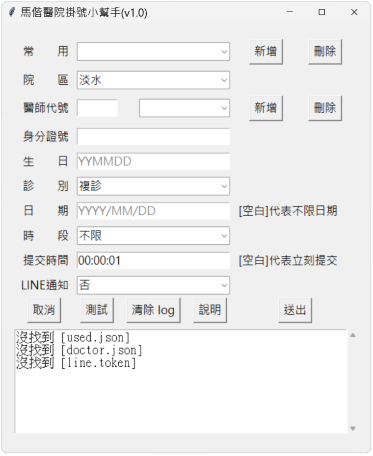

馬偕醫院自動掛號程式
2025/5/6
1. 目的
有時候要幫小孩掛號，但是馬偕醫院星期六很難掛到號，凌晨12:00才開放線上掛號，而且一下子就額滿了，
因此想開發一套可以定時自動掛號的程式。
使用 Python 來開發，搭配 selenium 來自動填寫表單，掛號成功後，會發送 LINE 簡訊通知
2. 安裝 Python Selenium 套件
Selenium 是一個 自動化瀏覽器操作工具，它可以幫你：
自動開啟瀏覽器（Chrome, Firefox…）
模擬人類行為：點擊、輸入、捲動、選擇下拉選單等
用 Selenium 來自動填寫表單
安裝指令：
pip install selenium
3. 安裝 BeautifulSoup4 套件
BeautifulSoup4（簡稱 BS4） 是一個 Python 套件，用來解析、搜尋、提取 HTML/XML 中的內容。
用 BS4 在掛號成功時，取得掛號的詳細資訊（如:看診日期、科別、醫師...等訊息）
安裝指令：
pip install beautifulsoup4
4. 利用 Tkinter 打造 GUI 介面
tkinter 是 Python 內建的圖形介面（GUI）工具包，讓你可以用 Python 來打造 視窗介面，
如：輸入框、按鈕、下拉選單、標籤、彈跳視窗...等，不再只有醜醜的終端機！
5. 傳送 LINE 通知
要傳送 LINE 通知，必須先取得 LINE 的 Token
步驟如下：
- 建立 LINE Bot 帳號
登入 LINE Developers（https://developers.line.biz/console/）
建立一個「Provider」（提供者名稱，可自訂）
在該 Provider 下，新增一個「Messaging API channel
- 開啟 Channel 設定頁面
在剛建立好的 Messaging API channel 中，你會看到：
Channel ID
Channel Secret
Channel access token（這就是你要的寶貝♥）
- 產生 Channel Access Token
滑到頁面中間「Messaging API settings」
找到「Channel access token」
點選「Issue」按鈕產生一組 long-lived token
複製這串長長的 token，程式就能用它來發送訊息囉！
6. 安裝 PyInstaller 套件
PyInstaller 是一個可以把你寫的 Python 程式打包成「單一可執行檔（EXE、APP）」的工具，
讓別人不需要裝 Python、套件、虛擬環境，也能直接執行你的程式！
安裝指令：
pip install pyinstaller
打包指令：
pyinstaller --onefile --noconsole --copy-metadata readchar gui.py
/project/
├── build/ ← 中間暫存
├── dist/
│ └── gui.exe ← 執行檔在這！
├── gui.py
參數解釋
--onefile 把整個程式打包成一個「單一 .exe 檔」，不會出現一堆資料夾跟 DLL，適合發佈
--noconsole 不顯示黑色的終端機視窗，適合 GUI 視窗程式（像 tkinter）
--copy-metadata readchar
因為程式有用到 readchar，要告訴 PyInstaller：「我需要 readchar 這個套件的 metadata（像版本、依賴）」
這通常是某些套件需要 pkg_resources 或 importlib.metadata 才能正常跑，沒加的話會出現錯誤！
gui.py 你要打包的 Python 主程式檔案
7. 實作及心得
- 心得
這次實作了馬偕醫院自動掛號程式，我改良了之前自動填表的程式，加上了以下功能：
- 定時功能（時間到了，自動啟動掛號流程）
- 利用院區、醫師代號、掛號時間自動選取掛號頁面
- 加上 GUI 介面
- 加上 LINE通知 的功能
- 把 Python 程式包裝成一個執行檔
本來是希望能做到輸入醫師姓名，就可以幫你掛號，但發現這難度有點高，後來分析網址，發現可以用醫師代號來取得正確的網頁，所以退而求其次，改成用醫師代號來掛號，缺點是要先手動找出醫師代號。
此外，自動掛號程式是非常高度客製化的，每家醫院的掛號網頁都不太一樣，所以無法通用。
- 如何取得[醫師代號]
進入你要掛號醫師的 依醫師掛號 頁面，觀察其網址（如下），
https://www.mmh.org.tw/register_single_doctor.php?depid=C7&did=1114&area=ts，
其中 did=1114 的 1114 就是[醫師代號]
- 專案及執行檔下載點
專案網址：https://github.com/bwm0822/autofill.git
將專案下載後，依照以下步驟，就可以產生一個可執行檔（gui.exe）
- 進入專案目錄
- 建立 Python 虛擬環境
python -m venv ./venv
- 啟動 Python 虛擬環境
.\venv\Scripts\activate
- 安裝相關套件
pip install -r requirements.txt
- 將程式打包為一個執行檔，執行檔會放在 \dist\gui.exe
pyinstaller --onefile --noconsole --copy-metadata readchar gui.py
執行檔下載點：https://github.com/bwm0822/autofill/blob/main/dist/gui.exe
執行檔可能會被 Microsoft Defender SmartScreen 攔截，點擊[其他資訊]，再點擊[仍要執行]，即可執行
- GUI 介面

- 使用說明
選擇[院區]、[診別]、[時段]、[LINE通知]
填寫[醫師代號]、[身分證號]、[生日]、[日期]、[提交時間]
按[送出]鍵，則會啟動掛號流程
[時段] 不限：自動選取第一個可掛號的時段，上午、下午、晚間：只選取對應的時段
[日期] 空白：自動選取第一個可掛號的日期
[提交時間] 空白：立即掛號，否則等到提交時間才掛號
[測試] 用來驗證你的表單是否正確，如果表單正確，就可以連上醫師掛號的頁面，但不會掛號，
按[測試]鍵會顯示網頁，可用來確認網頁是否正確，按[送出]鍵則不會顯示網頁，以加快執行速度及避免頁面被干擾
[新增]及[刪除]常用的設定
[新增]功能：在[用戶]、[醫師代號]欄位的右邊按[新增]，會跳出視窗，輸入設定，按[確定]就可以新增設定
[刪除]功能：選取[用戶]、[醫師代號]欄位的下拉式選單，並按欄位右邊的[刪除]鍵，即可[刪除]設定
[用戶]的設定檔會存於執行檔同路徑下的 user.json，[醫師]的設定檔會存於執行檔同路徑下 doctor.json
[LINE通知]
需取得 LINE 的 Token（參考此處），並儲存於跟執行檔同路徑下的 line.token，才能啟用